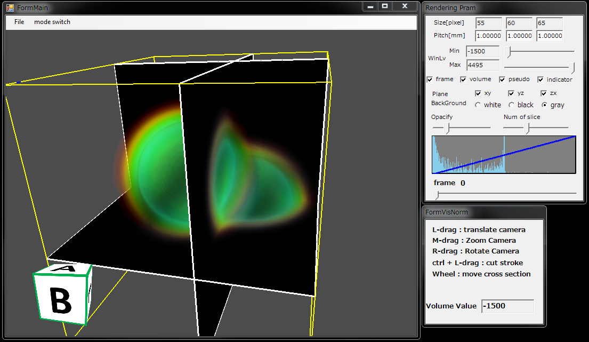
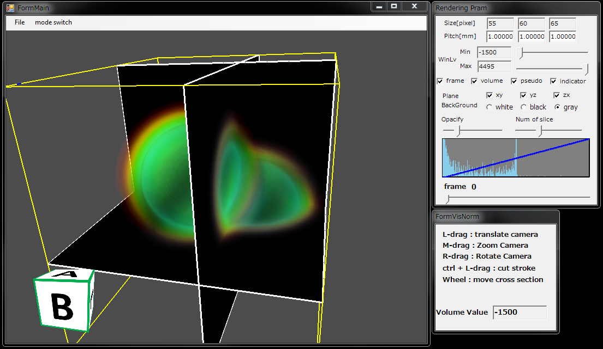
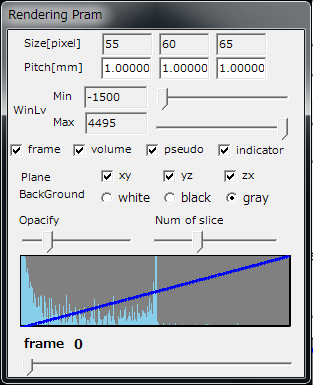
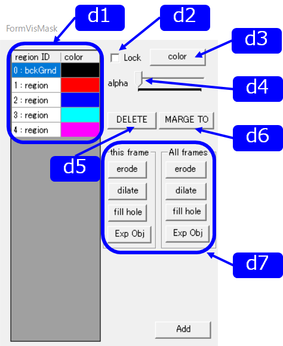

RoiPainter4D Visualization

RoiPainter4D I/O Visualization Segmentation Refinement
Visualization in RoiPainter4D
RoiPainter4Dでは，2つのVisualizationモードが使用可能です．
起動 : Click "Menu > mode switch > to start visualization mode"
起動 : Click "Menu > mode switch > to start visualization mode"
Visualization Normal
基本のVisualizationモード．入力データをそのまま観察する．


|  |
Size 固定 Pitch スライスの間隔 WinLv frame 枠の表示 volume 3次元モデルの表示 suedo 疑似モデルの表示 Plane xy/yz/zx 各平面のスライスの表示 BackGround whilte/black/gray 背景色の変更 Trans suedoの透明度設定 Slice transFunc L-dragで操作 SliderBar フレーム数を操作 ＊このダイアログはすべてのモード共通です． |
Visualization Mask
マスクしたデータを見るためのVisualizationモード．Storeしたデータをまとめて見ることができる．抽出した部位ごとに色を変えるなどして可視化できる．
|  |
d1. Mask list 保存したマスクの情報 d2. Lock check box ロック設定 d3. color button マスクの色変更（Color） d4. alpha slider 透明度設定 d5. DELETE button マスクの削除 d6. MARGE TO button マスクのマージ d7. Mask operation マスクの操作 |